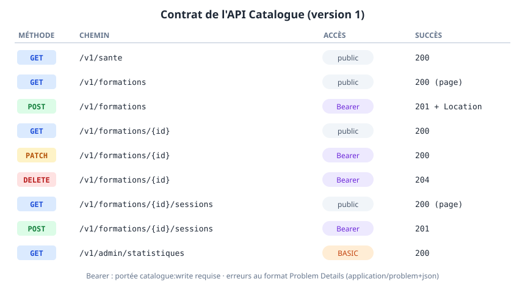
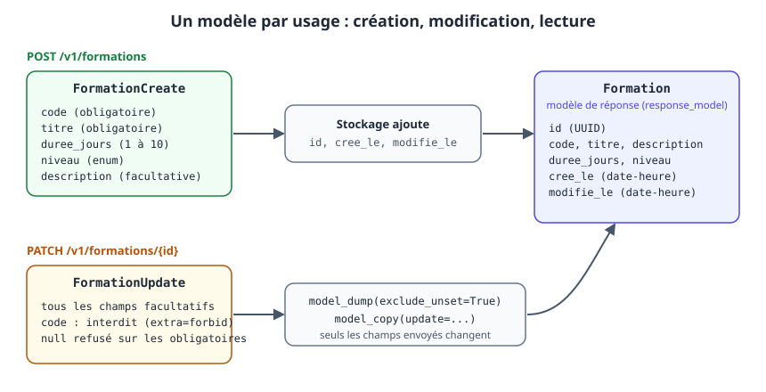
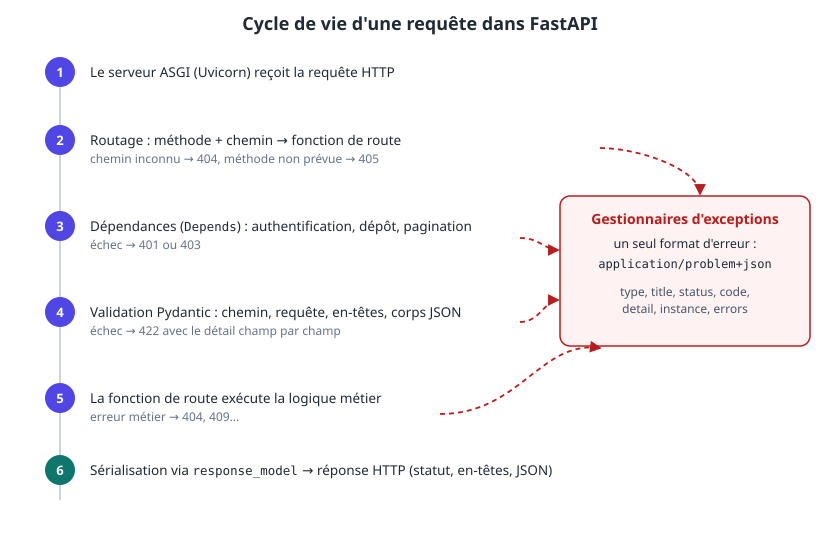
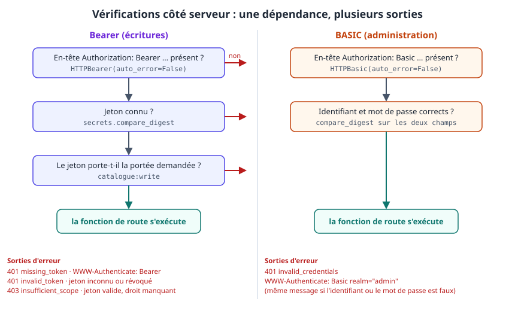

À la fin de la journée, les stagiaires sont capables de :
- concevoir le contrat d'une API REST : ressources, URL, méthodes, codes de statut, pagination, erreurs ;
- choisir entre Flask, Sanic et FastAPI selon le besoin, et expliquer la différence entre WSGI et ASGI ;
- déclarer des routes et des méthodes avec FastAPI, puis lire la documentation OpenAPI générée ;
- accepter des paramètres de chemin, de requête, d'en-tête et de corps, validés par des modèles Pydantic ;
- renvoyer des erreurs uniformes au format Problem Details (RFC 9457) ;
- protéger l'API avec l'authentification BASIC et Bearer, puis la tester avec
pytestet avec le client écrit le jour 1.
Livrable de la journée
Le dépôt api-catalogue/ enrichi d'un service web app/ qui expose :
- les formations (liste filtrée, triée et paginée, lecture, création, modification partielle, suppression) ;
- les interventions d'une formation (liste et création) ;
- une route d'administration protégée par BASIC ;
- des écritures protégées par un jeton Bearer avec portée ;
- une documentation Swagger UI générée automatiquement ;
- une suite de tests
pytestet un script qui rejoue le scénario du jour 1 contre l'API locale.
Le stockage est en mémoire (un dictionnaire derrière une classe Stockage). La base de données n'est pas le sujet du jour : le contrat HTTP, la validation et la sécurité le sont. Le jour 3, l'ORM de Django remplacera ce stockage, et le gorest_client du jour 1 servira à vérifier que les deux implémentations respectent exactement le même contrat.
| Heure | Séquence | Blocs programme |
|---|---|---|
| 09h00 – 09h15 | Accueil, retour sur le jour 1, vérification des postes | — |
| 09h15 – 09h55 | Théorie — Concevoir une API REST : ressources, méthodes, sérialisation | Bloc 3 |
| 09h55 – 10h45 | Pratique — Conception du contrat de l'API Catalogue | Bloc 3 |
| 10h45 – 11h00 | Pause | |
| 11h00 – 12h30 | Pratique guidée — FastAPI : routers, paramètres, modèles Pydantic | Bloc 4 |
| 12h30 – 13h30 | Déjeuner | |
| 13h30 – 15h00 | Pratique guidée — validation, erreurs, authentification BASIC et Bearer, tests | Bloc 4 |
| 15h00 – 15h15 | Pause | |
| 15h15 – 16h45 | Atelier — Créer un service web avec FastAPI | Bloc 4 |
| 16h45 – 17h30 | Démonstrations, synthèse, aperçu du jour 3 | — |
Chaque notion est suivie d'une manipulation immédiate : le formateur démontre, les stagiaires reproduisent dans leur éditeur. Les sections 🛠️ Micro-atelier durent de 10 à 25 minutes. Le code complet de l'atelier figure dans le support (section B5) : il sert de corrigé, pas de point de départ.
3.1 Du consommateur au concepteur
Hier, le contrat appartenait à quelqu'un d'autre. Aujourd'hui, les décisions de conception sont celles des stagiaires, et chacune a un coût pour les consommateurs : un nom de champ mal choisi, un code de statut incohérent ou une erreur illisible se paient pendant des années, parce qu'une API publiée ne se corrige pas aussi facilement qu'une fonction interne.
Les contraintes REST vues le jour 1 se traduisent en décisions concrètes :
| Contrainte REST | Décision de conception pour l'API Catalogue |
|---|---|
| Client–serveur | l'API ne renvoie que des données (JSON), jamais de HTML ni de logique d'affichage |
| Sans état | pas de intervention serveur : chaque requête porte son Authorization, la pagination utilise un curseur transmis par le client |
| Cache | les ressources lisibles peuvent exposer un ETag (extension de l'atelier) |
| Interface uniforme | URL en noms pluriels, verbes HTTP standard, mêmes codes de statut et même format d'erreur partout |
| Système en couches | l'API ne suppose pas être appelée directement : elle sera derrière un serveur, un proxy ou une passerelle |
La carte décrit ce qu'on peut commander (le contrat), pas comment la cuisine travaille (l'implémentation). Le cuisinier peut changer de four, de fournisseur ou de recette sans toucher à la carte, mais retirer un plat de la carte déçoit des clients. Le contrat OpenAPI joue le rôle de la carte.
3.2 Modéliser les ressources du catalogue
Une ressource est un concept métier que les consommateurs veulent lire ou modifier. On la choisit à partir du vocabulaire du métier, pas à partir des tables de la base de données.
| Ressource | Description | Identifiant | Relations |
|---|---|---|---|
formation |
une formation du catalogue (code, title, durée, level) | UUID | possède des interventions |
intervention |
une date de réalisation d'une formation (début, location, places) | UUID | appartient à une formation |
Choix de l'identifiant. Le jour 1 a montré que GoRest est passé d'identifiants entiers à des UUID. Un identifiant séquentiel (/formations/17) révèle le volume de données et invite à deviner les voisins (/formations/18). Un UUID est opaque et peut être généré par n'importe quel client ou serveur sans coordination. Le code métier (PYT100614-F) reste un champ de la ressource, unique mais distinct de l'identifiant technique.
Les règles de nommage d'URL, déjà aperçues le jour 1, deviennent ici des règles à appliquer :
| À faire | À éviter | Pourquoi |
|---|---|---|
GET /v1/formations |
GET /v1/getFormations |
le verbe est dans la méthode HTTP |
GET /v1/formations/{id} |
GET /v1/formation?id=12 |
un élément a sa propre URL |
DELETE /v1/formations/{id} |
POST /v1/formations/{id}/supprimer |
DELETE existe |
GET /v1/formations/{id}/interventions |
GET /v1/interventions?formation=… comme seule option |
la relation de contenance est visible dans l'URL |
/v1/formations (pluriel) |
/v1/formation |
une collection est un pluriel, partout |
/v1/formations en minuscules |
/v1/Formations |
les URL sont sensibles à la casse |
Limiter l'imbrication à deux levelx (/formations/{id}/interventions). Au-delà, exposer la ressource enfant à la racine avec un filtre : /v1/interventions?filter[formation_id]=….
Le versionnement dès le premier jour. Le préfixe /v1 figure dans toutes les URL. Le jour 1 a montré ce qu'un changement incompatible casse chez les consommateurs : la version 2 d'une API se publie sous /v2, pendant que /v1 continue de répondre le temps de la migration.
3.3 Choisir les méthodes, les URL et les codes de statut
Le tableau ci-dessous est le contrat de la ressource formation que les stagiaires implémenteront dans l'atelier :
| Action | Méthode et URL | Corps de requête | Succès | Erreurs possibles |
|---|---|---|---|---|
| Lister | GET /v1/formations |
— | 200 + page |
400 (curseur invalide), 422 (paramètre invalide) |
| Lire | GET /v1/formations/{id} |
— | 200 |
404, 422 (UUID mal formé) |
| Créer | POST /v1/formations |
formation complète | 201 + en-tête Location |
401, 403, 409 (code déjà utilisé), 422 |
| Modifier | PATCH /v1/formations/{id} |
champs à changer | 200 + formation à jour |
401, 403, 404, 422 |
| Supprimer | DELETE /v1/formations/{id} |
— | 204 sans corps |
401, 403, 404 |
Les règles derrière le tableau :
POSTrenvoie201 Createdet l'en-têteLocationqui contient l'URL de la ressource créée. Le corps de la réponse reprend la ressource complète,idcompris : le client n'a pas à la relire.PATCHplutôt quePUT: le client n'envoie que les champs à changer (JSON Merge Patch, vu le jour 1 avec GoRest). UnPUTobligerait à renvoyer tous les champs et ferait perdre ceux qu'on oublie.DELETErenvoie204 No Content, sans corps. Un secondDELETEsur la même ressource renvoie404: l'état final est identique (la ressource n'existe pas), seule la réponse diffère. La méthode reste idempotente au sens HTTP.401ou403: identité inconnue contre droit manquant (jour 1).409 Conflict: la requête est valide en elle-même, mais incompatible avec l'état actuel (code déjà pris).422 Unprocessable Content: la requête est bien formée, mais une donnée est invalide.400est réservé aux requêtes qu'on ne peut même pas interpréter (curseur illisible, corps qui n'est pas du JSON).
Les actions qui ne sont pas du CRUD. Annuler une intervention n'est ni une création ni une suppression de ressource. Trois façons de le modéliser :
| Approche | Exemple | Quand l'utiliser |
|---|---|---|
| Changer un champ d'état | PATCH /v1/interventions/{id} avec {"statut": "annulee"} |
l'état est une propriété naturelle de la ressource |
| Créer une ressource d'événement | POST /v1/interventions/{id}/annulations |
on veut conserver la trace (motif, date) |
| Sous-ressource d'action | POST /v1/interventions/{id}/annuler |
dernier recours, quand aucune des deux autres ne convient |
Pour le fil rouge, l'annulation passe par un champ statut modifiable.
3.4 La sérialisation des données
Sérialiser consiste à transformer un objet Python en texte (JSON) pour l'envoyer ; désérialiser fait l'opération inverse à la réception. Entre les deux, les types Python et les types JSON ne se correspondent pas toujours.
| Python | JSON | Remarques |
|---|---|---|
str |
chaîne | encodage UTF-8 |
int, float |
nombre | JSON ne distingue pas entier et décimal |
bool |
true / false |
|
None |
null |
|
list, tuple |
tableau | |
dict |
objet | clés obligatoirement des chaînes |
datetime, date |
aucun | à écrire en chaîne ISO 8601 |
UUID |
aucun | à écrire en chaîne |
Decimal |
aucun | à écrire en chaîne pour ne pas perdre de précision |
Enum |
aucun | à écrire par sa valeur |
import datetime, json
json.dumps({"debut": datetime.date(2027, 3, 15)})
# TypeError: Object of type date is not JSON serializable
Le module standard json ne sait pas sérialiser les dates ni les UUID. Un framework d'API prend ce travail en charge : FastAPI s'appuie sur Pydantic pour convertir les types Python vers JSON, et inversement. Le développeur déclare un type (date, UUID, Enum), la conversion et la validation suivent.
Conventions de format à fixer dès la conception :
| Sujet | Convention retenue pour l'API Catalogue | Justification |
|---|---|---|
| Dates | ISO 8601 : 2027-03-15 |
lisible, triable, reconnu partout |
| Dates et heures | ISO 8601 en UTC avec suffixe Z : 2026-11-16T09:00:00Z |
évite les ambiguïtés de fuseau |
| Montants | chaîne décimale ou entier en centimes, jamais un float |
les flottants ne représentent pas exactement 0,1 |
| Noms de champs | snake_case |
cohérent avec Python et avec GoRest |
| Absence de valeur | champ présent avec null |
le consommateur n'a pas à tester l'existence de la clé |
| Énumérations | valeurs en minuscules sans accent (avance) |
pas de problème d'encodage dans les filtres |
| Collections | enveloppe {"data": [...], "meta": {...}} |
on peut ajouter des métadonnées sans casser les clients |
| Langue des messages d'erreur | français pour detail, anglais pour code |
code est stable et sert au traitement automatique |
Renvoyer directement un tableau JSON ([{...}, {...}]) est tentant, mais interdit d'ajouter plus tard le curseur de pagination ou un total sans casser tous les clients. C'est précisément la différence que le jour 1 a relevée entre GoRest v2 (tableau nu) et v3 (enveloppe).
3.5 Concevoir les listes : filtres, tri, pagination
Le contrat d'une liste est plus riche que celui d'un élément. Pour garder la compatibilité avec le client du jour 1, l'API Catalogue reprend les conventions de GoRest v3 :
| Paramètre | Rôle | Exemple |
|---|---|---|
filter[level] |
filtre sur une valeur | ?filter[level]=avance |
sort |
tri ; préfixe - pour décroissant |
?sort=-duration |
page[size] |
éléments par page, de 1 à 100 (25 par défaut) | ?page[size]=10 |
page[after] |
curseur opaque de la page suivante | ?page[after]=Mg== |
page[count] |
ajoute meta.total si true |
?page[count]=true |
La réponse d'une liste :
{
"data": [ { "id": "…", "code": "PYT100614-F", "title": "Python Avancé : Web Services" } ],
"meta": { "has_more": true, "next_cursor": "Mg==", "total": null }
}
Le curseur est opaque pour le client : ici, le décalage encodé en base64. Le serveur reste libre de changer cette représentation plus tard (curseur basé sur une date, sur un identifiant) sans casser personne.
3.6 Conseils pour créer de bons points d'entrée
| Conseil | Détail |
|---|---|
| Un format d'erreur unique | toutes les erreurs, y compris celles du framework (404, 405, 422, 500), suivent Problem Details |
| Des codes de statut précis | ne jamais renvoyer 200 avec {"erreur": "..."} dans le corps |
| Idempotence documentée | dire quelles méthodes se rejouent sans risque, et accepter Idempotency-Key sur les POST sensibles |
| Validation stricte des entrées | types, bornes, longueurs, énumérations : tout ce qui entre est suspect |
| Pas de fuite d'information | un 500 ne renvoie jamais de trace Python ; un identifiant ou un mot de passe faux donnent le même message |
| Limites explicites | taille maximale de page, taille maximale du corps, quotas par jeton |
| Compatibilité ascendante | ajouter un champ est sans risque ; renommer, retirer ou changer le type d'un champ exige une nouvelle version |
| Documentation exécutable | le contrat OpenAPI est généré et testé, pas rédigé à côté |
| Journalisation utile | un identifiant de requête (request_id) dans chaque réponse d'erreur et chaque ligne de log |
🛠️ Micro-atelier 5 — Concevoir le contrat de la ressource intervention (25 min)
Consignes (en binômes, sur papier, tableau ou éditeur) :
- lister les champs d'une
intervention(nom, type, obligatoire ou non, contraintes) ; - écrire le tableau « action, méthode et URL, corps, succès, erreurs » des opérations liste et création d'une intervention d'une formation ;
- décider de la réponse quand la formation parente n'existe pas (
404) et quand la date de début est dans le passé (422) ; - proposer la manière d'annuler une intervention.
Corrigé formateur.
| Champ | Type | Obligatoire | Contraintes |
|---|---|---|---|
id |
UUID | généré par le serveur | — |
formation_id |
UUID | généré à partir de l'URL | formation existante |
start_date |
date ISO 8601 | oui | postérieure à aujourd'hui |
location |
texte | oui | 2 à 80 caractères |
places |
entier | oui | de 1 à 30 |
statut |
énumération | non (défaut planifiee) |
planifiee, confirmee, annulee |
| Action | Méthode et URL | Succès | Erreurs |
|---|---|---|---|
| Lister | GET /v1/formations/{id}/interventions |
200 + page |
404 (formation inconnue) |
| Créer | POST /v1/formations/{id}/interventions |
201 + intervention créée |
401, 403, 404, 422 |

Point de contrôle : chaque binôme présente un écart par rapport au corrigé et le justifie. Un écart justifié (par exemple 409 plutôt que 422 pour un doublon) est accepté, tant qu'il est appliqué de façon cohérente à toute l'API.
4.1 Les bibliothèques d'API REST en Python
Pourquoi un framework ? Écrire un service web avec la seule bibliothèque standard (http.server) oblige à analyser soi-même les URL, décoder le JSON, valider les champs, formater les erreurs et gérer la concurrence. Un framework fournit ces briques, éprouvées et documentées.
WSGI et ASGI : deux interfaces entre le serveur et l'application.
| WSGI | ASGI | |
|---|---|---|
| Modèle | synchrone : un thread ou un processus traite une requête de bout en bout | asynchrone : une boucle d'événements traite beaucoup de connexions à la fois |
| Connexions longues (WebSocket, flux) | non | oui |
| Serveurs applicatifs courants | Gunicorn, uWSGI | Uvicorn, Hypercorn |
| Frameworks | Flask, Django (mode classique) | FastAPI, Starlette, Sanic (serveur intégré), Django (mode ASGI) |
Un framework ASGI peut exécuter à la fois des fonctions asynchrones (async def) et des fonctions classiques (def). Les serveurs et le déploiement sont détaillés le jour 3.
Les trois frameworks du programme :
| Critère | Flask | Sanic | FastAPI |
|---|---|---|---|
| Philosophie | micro-framework, minimal et extensible | serveur asynchrone intégré, performance | typage Python et validation avant tout |
| Interface | WSGI | serveur propre, ASGI possible | ASGI (bâti sur Starlette) |
| Validation des entrées | via extensions (Marshmallow, Pydantic, etc.) | via extensions | native (Pydantic) |
| Documentation OpenAPI | via extensions | via l'extension sanic-ext |
native, générée à partir des annotations |
| Authentification | via extensions | via extensions ou code maison | utilitaires de sécurité fournis (BASIC, Bearer, OAuth2) |
| Courbe d'apprentissage | très douce | douce | douce si l'on connaît les annotations de type |
Le même point d'entrée, trois fois. GET /formations/{code} dans chaque framework, avec un dictionnaire comme stockage :
# Flask
from flask import Flask, abort
app = Flask(__name__)
FORMATIONS = {"PYT100614-F": {"code": "PYT100614-F", "title": "Python Avancé : Web Services"}}
@app.get("/formations/<code>")
def lire(code: str):
if code not in FORMATIONS:
abort(404)
return FORMATIONS[code]
# Sanic
from sanic import Sanic
from sanic.exceptions import NotFound
from sanic.response import json
app = Sanic("catalogue")
@app.get("/formations/<code>")
async def lire(request, code: str):
if code not in FORMATIONS:
raise NotFound("Formation inconnue")
return json(FORMATIONS[code])
# FastAPI
from fastapi import FastAPI, HTTPException
from pydantic import BaseModel
class FormationSchema(BaseModel):
code: str
title: str
app = FastAPI()
@app.get("/formations/{code}")
def lire(code: str) -> FormationResponse:
if code not in FORMATIONS:
raise HTTPException(status_code=404, detail="Formation inconnue")
return FORMATIONS[code]
Les trois versions se ressemblent. La différence apparaît ailleurs : dans la version FastAPI, le modèle FormationSchema valide la réponse, documente le schéma dans OpenAPI et fournit l'autocomplétion à l'éditeur, sans code supplémentaire.
Choix pour la formation : FastAPI, pour trois raisons : la validation et la documentation sortent des annotations de type que les stagiaires maîtrisent déjà ; le contrat OpenAPI est généré automatiquement (section 1.6 du jour 1) ; le client de test TestClient est fourni. Flask reste un très bon choix pour un petit service ou une application web avec gabarits ; Sanic, quand l'asynchrone et le débit priment sur l'écosystème.
Django dispose de ses propres solutions pour les API (Django REST framework, Django-Ninja), étudiées le jour 3. On les choisit quand l'application a déjà un modèle de données Django, une administration et une authentification à réutiliser.
4.2 Installer FastAPI et démarrer
# dans api-catalogue/, environnement virtuel actif (jour 1)
pip install "fastapi[standard]"
pip freeze > requirements.txt
L'option standard installe FastAPI avec ses outils usuels : le serveur Uvicorn, la commande fastapi et la bibliothèque httpx qui sert au client de test.
Arborescence de départ :
api-catalogue/
├── gorest_client/ # jour 1
├── app/
│ ├── __init__.py # fichier vide : app est un package
│ └── main.py
└── pyproject.toml
# pyproject.toml
[tool.fastapi]
entrypoint = "app.main:app"
# app/main.py
from fastapi import FastAPI
app = FastAPI(title="API Catalogue", version="1.0.0")
@app.get("/v1/health")
def health() -> dict[str, str]:
return {"statut": "ok"}
fastapi dev
La commande fastapi dev démarre un serveur de développement avec rechargement automatique à chaque modification de fichier. La console affiche une ligne du type Uvicorn running on http://127.0.0.1:8000.
Trois adresses fournies sans rien écrire :
| URL | Contenu |
|---|---|
http://127.0.0.1:8000/docs |
Swagger UI : documentation interactive, avec un bouton « Try it out » |
http://127.0.0.1:8000/redoc |
ReDoc : documentation de lecture, présentation alternative |
http://127.0.0.1:8000/openapi.json |
le contrat OpenAPI brut, lisible par les outils (Postman, Bruno, générateurs de client) |
fastapi dev n'est pas un serveur de productionLe mode dev active le rechargement automatique et écoute en local uniquement. La mise en production (Uvicorn ou Gunicorn derrière un proxy) est traitée le jour 3. Si la commande fastapi n'est pas reconnue, vérifier que l'environnement virtuel est actif, ou lancer uvicorn app.main:app --reload --host 0.0.0.0 pour écouter sur toutes les interfaces réseau.
🛠️ Micro-atelier 6 — Première route et premier contrat (15 min)
- Créer
app/__init__.py,app/main.pyetpyproject.tomlcomme ci-dessus, puis démarrerfastapi dev. - Appeler la route avec
curl.exe -i http://127.0.0.1:8000/v1/health: relever le statut, leContent-Typeet le corps. - Ouvrir
/docs, déplier la route, cliquer sur Try it out puis Execute. - Ouvrir
/openapi.jsonet retrouver le chemin/v1/healthet sa méthode. - Modifier le titre de l'application : constater le rechargement automatique et le changement dans
/docs.
Question de réflexion. Le code ne comporte aucune ligne de documentation. D'où viennent les informations de /docs ? (Réponse : des décorateurs, des annotations de type et des modèles Pydantic : FastAPI les lit et produit le contrat OpenAPI.)
4.3 Déclarer des routes et des méthodes
Une opération de chemin (path operation) combine une méthode HTTP, un chemin et une fonction :
@app.get("/v1/formations") # GET
@app.post("/v1/formations") # POST
@app.patch("/v1/formations/{id}") # PATCH
@app.delete("/v1/formations/{id}") # DELETE
Les décorateurs acceptent des options qui alimentent à la fois le comportement et la documentation :
| Option | Effet |
|---|---|
status_code=201 |
code renvoyé en cas de succès (aussi affiché dans OpenAPI) |
response_model=FormationResponse |
modèle de la réponse : filtre, valide et documente |
tags=["formations"] |
regroupe les routes dans /docs |
summary="Lister les formations" |
titre court ; la docstring de la fonction sert de description |
responses={404: {"description": "Formation inconnue"}} |
documente les codes d'erreur possibles |
dependencies=[Depends(...)] |
exécute des vérifications avant la route (authentification) |
response_class=Response |
permet une réponse sans corps (204) |
Organiser les routes avec APIRouter. Une application réelle ne tient pas dans un seul fichier. Chaque ressource a son module, avec son propre routeur, assemblé dans main.py :
# app/routers/formations.py
from fastapi import APIRouter
router = APIRouter(prefix="/formations", tags=["formations"])
@router.get("")
def lister_formations(): ...
# app/main.py
from fastapi import APIRouter, FastAPI
from .routers import formations
version = APIRouter(prefix="/v1")
version.include_router(formations.router)
app = FastAPI(title="API Catalogue", version="1.0.0")
app.include_router(version)
L'URL finale est la concaténation des préfixes : /v1 + /formations + "" donne /v1/formations. Changer de version, plus tard, consiste à ajouter un second routeur /v2.
def ou async def ? FastAPI accepte les deux, avec des conséquences différentes :
| Déclaration | Exécution | À utiliser quand |
|---|---|---|
def route(...) |
dans un pool de threads, sans bloquer la boucle d'événements | la fonction appelle du code bloquant : requests, un pilote de base de données synchrone, un fichier |
async def route(...) |
directement sur la boucle d'événements | la fonction n'utilise que des appels asynchrones (await httpx..., pilote de base asynchrone) |
async def fige tout le serveurUn time.sleep(5) ou un requests.get(...) placé dans une route async def bloque la boucle d'événements : toutes les requêtes en cours attendent. Dans le doute, déclarer def : FastAPI s'occupe du pool de threads. Les routes de l'atelier sont des def, car le stockage est en mémoire et le code est synchrone.
Démonstration du formateur (5 min) : deux routes, l'une def, l'autre async def, contenant time.sleep(5) ; appeler la seconde deux fois en parallèle avec deux terminaux et constater que les réponses arrivent l'une après l'autre.
4.4 Accepter des paramètres
FastAPI déduit l'origine de chaque paramètre à partir de la signature de la fonction :
| Le paramètre… | …vient de |
|---|---|
apparaît dans le chemin (/{formation_id}) |
chemin |
est un type simple (int, str, bool, Enum…) absent du chemin |
chaîne de requête (query) |
| est un modèle Pydantic | corps JSON |
est déclaré avec Header(...), Cookie(...), Query(...), Body(...) |
l'emplacement indiqué explicitement |
Paramètres de chemin typés. Le type de l'annotation sert de validation et de conversion :
import uuid
@router.get("/{formation_id}")
def lire_formation(formation_id: uuid.UUID) -> FormationResponse:
...
Appelée avec /v1/formations/abc, la route répond 422 avant même d'exécuter la fonction : abc n'est pas un UUID. La fonction reçoit un vrai objet uuid.UUID.
Paramètres de requête avec valeurs par défaut et contraintes :
from typing import Annotated, Literal
from fastapi import Query
@router.get("")
def lister_formations(
level: Annotated[Level | None, Query(alias="filter[level]")] = None,
sort: Annotated[Literal["code", "-code", "title", "-title"], Query(alias="sort")] = "code",
size: Annotated[int, Query(alias="page[size]", ge=1, le=100)] = 25,
after: Annotated[str | None, Query(alias="page[after]")] = None,
):
...
Points à retenir :
Annotated[type, Query(...)]est la forme recommandée : le type et ses contraintes sont réunis, la valeur par défaut reste une vraie valeur par défaut Python ;alias="page[size]"est indispensable, carpage[size]n'est pas un nom de variable Python valide ; le nom Python (size) et le nom exposé (page[size]) sont découplés ;ge,le,min_length,max_length,patternexpriment les contraintes, et apparaissent dans la documentation ;Literal[...]ou uneEnumlimite les valeurs autorisées : un tri sur un champ inexistant est refusé avec un422au location de provoquer une erreur interne ;- un paramètre sans valeur par défaut est obligatoire.
Paramètres d'en-tête :
from fastapi import Header
@router.post("")
def creer(idempotency_key: Annotated[str | None, Header()] = None): ...
FastAPI convertit idempotency_key en Idempotency-Key (les underscores deviennent des tirets) cf chapitre 1.
Corps de requête. Un paramètre dont le type est un modèle Pydantic est lu dans le corps JSON, validé, puis converti :
@router.post("", status_code=201)
def creer_formation(data: FormationCreate) -> FormationResponse:
...
Si le corps n'est pas du JSON valide, ou si un champ est absent ou invalide, la fonction n'est jamais appelée.
4.5 Les modèles Pydantic : valider et documenter les données
Pydantic définit des modèles : des classes dont les attributs sont typés. À la construction, les données sont validées et converties ; en cas d'écart, une exception décrit précisément chaque erreur.
import uuid
from datetime import datetime
from enum import Enum
from pydantic import BaseModel as BaseSchema, ConfigDict, Field
class Level(str, Enum):
beginner = "initiation"
medium = "intermédiaire"
advanced = "avancé"
class FormationSchema(BaseSchema):
model_config = ConfigDict(str_strip_whitespace=True)
code: str = Field(pattern=r"^[A-Z]{3}\d{6}-[A-Z]$", examples=["PYT100614-F"])
title: str = Field(min_length=3, max_length=120)
description: str | None = Field(default=None, max_length=2000)
duration: int = Field(ge=1, le=10)
level: Level
# pour les réponses incluant l'identifiant et les dates de création et de mise à jour
class FormationResponse(FormationSchema):
id: uuid.UUID
created_at: datetime
updated_at: datetime
| Élément | Rôle |
|---|---|
class X(BaseModel) |
déclare un modèle ; les attributs annotés deviennent des champs |
Field(...) |
contraintes (ge, le, min_length, pattern…), valeur par défaut, exemples pour la documentation |
str \| None = None |
champ facultatif et nullable |
Enum |
valeurs autorisées limitées à une liste fermée |
ConfigDict(str_strip_whitespace=True) |
supprime les espaces en début et fin de chaîne avant validation |
Un modèle par usage. Utiliser un seul modèle pour la création, la modification et la lecture conduit à des compromis fragiles : un client pourrait envoyer un id, ou on devrait rendre facultatifs des champs obligatoires à la création.

| Modèle | Usage | Particularités |
|---|---|---|
FormationCreate |
corps du POST |
tous les champs obligatoires, aucun id |
FormationUpdate |
corps du PATCH |
tous les champs facultatifs, code interdit (extra="forbid") |
FormationSchema |
réponse | ajoute id, created_at, updated_at |
Modification partielle avec exclude_unset. Pour un PATCH, il faut distinguer « champ absent » (ne pas toucher) de « champ envoyé avec null » (effacer la valeur). Pydantic mémorise les champs réellement reçus :
updates = data.model_dump(exclude_unset=True)
# {"title": "Nouveau titre"} si seul le titre a été envoyé
# {"description": None} si description a été envoyée avec null
model_dump(exclude_unset=True) ne renvoie que les champs présents dans la requête. Mettre à jour un objet avec ce dictionnaire donne exactement la sémantique du JSON Merge Patch vue le jour 1.
Validateurs métier. Quand une contrainte dépasse les bornes simples, on écrit une méthode de validation :
from datetime import date
from pydantic import field_validator, model_validator
class FormationEditValidatorsMixin(BaseSchema):
"""
Mixin contenant les validateurs pour les champs des formations.
à attacher aux schémas de création et de mise à jour des formations.
ATTENTION pour un validateur de champs: ajouter check_fields=False
si le champ n'est pas encore présent dans l'instance du schéma ici BaseSchema.
"""
@field_validator("duration", check_fields=False)
@classmethod
def odd_duration(cls, value: int):
"""
un validateur de champs est évalué avec son schéma
peut transformer la valeur du champs en paramètre et la retourner: formatter
peut bloquer la validation pour des considérations avancées, métier
mode par défaut: "before" (avant la création de l'instance) donc méthode de classe avec @classmethod
"""
if not value % 2:
raise ValueError(f"{value} doit être impair !!")
return value
@model_validator(mode="after")
def level_matching_duration(self):
"""
un validateur sur plusieurs champs, qui nécessite l'instance du schéma
after: ce validateur est exécuté après la création de l'instance du schéma
"""
matches = {
"initiation": 3,
"intermédiaire": 3,
"avancé": 5
}
if self.duration < matches[self.level]:
raise ValueError(f"une formation de niveau {self.level} demande au moins {matches[self.level]} j")
return self
@router.get("/{formation_id}", response_model=FormationResponse)
def lire_formation(formation_id: uuid.UUID): ...
Avec une annotation de retour (-> FormationResponse), FastAPI déduit le même comportement. Les deux écritures sont équivalentes pour les cas simples ; response_model= reste utile quand la fonction renvoie un objet plus riche que ce qu'on veut exposer.
🛠️ Micro-atelier 7 — Modéliser et voir la validation à l'œuvre (15 min)
- Créer
app/schemas/formations.pyavecLevel,FormationSchema,FormationCreateetFormation(sections 4.5 et B5). - Dans un shell Python, construire
FormationCreate(...)avec des données valides, puis avecduration=99; lire le message d'erreur Pydantic. -
Ajouter à
main.pyune route temporaire : -
Depuis
/docs, envoyer un corps valide, puis un corps aveclevelinvalide et un champ manquant ; comparer les réponses200et422.
Résultat attendu : la réponse 422 contient une liste detail avec, pour chaque erreur, un type (missing, enum, less_than_equal…), la localisation (loc) et un message. La section suivante transforme ce format par défaut en Problem Details.
4.6 Validation et gestion des erreurs

Toutes les erreurs de l'API passent par la même porte de sortie : les gestionnaires d'exceptions. C'est ce qui permet d'offrir au consommateur un format unique, quelle que soit l'origine de l'erreur (route inconnue, authentification, validation, règle métier).
Le format d'erreur par défaut de FastAPI. Pour un corps invalide, FastAPI répond 422 avec une liste detail (extrait) :
{
"detail": [
{
"type": "less_than_equal",
"loc": ["body", "duration"],
"msg": "Input should be less than or equal to 10",
"input": 99
}
]
}
Chaque erreur indique son type, sa localisation (loc : d'où vient le paramètre, puis son nom) et un message. Ce format est précis, mais il diffère du Problem Details que les consommateurs ont rencontré chez GoRest, et il varie selon l'erreur : une 404 produit {"detail": "Not Found"}, une erreur de validation un tableau. Un client doit alors gérer plusieurs formes.
Objectif : un seul format, Problem Details (RFC 9457).
{
"type": "https://api-catalogue.example/errors#validation_failed",
"title": "Unprocessable Entity",
"status": 422,
"code": "validation_failed",
"detail": "Certains champs ne sont pas valides.",
"instance": "/v1/formations",
"request_id": "6f7c2f2e-…",
"errors": [
{ "pointer": "/duration", "code": "less_than_equal", "detail": "Input should be less than or equal to 10" }
]
}
C'est exactement la forme que gorest_client.ApiError sait lire (code, errors, request_id), ce qui évite de modifier le client.
Étape 1 — une exception métier.
class ApiError(Exception):
def __init__(self, status: int, code: str, detail: str,
errors: list[dict] | None = None,
headers: dict[str, str] | None = None) -> None:
super().__init__(detail)
self.status = status
self.code = code
self.detail = detail
self.errors = errors
self.headers = headers
Le code métier lève ApiError(404, "not_found", "Formation introuvable.") sans connaître HTTP : seul le gestionnaire se préoccupe du format de la réponse.
Étape 2 — construire une réponse Problem Details.
import uuid
from http import HTTPStatus
from fastapi import Request
from fastapi.responses import JSONResponse
def problem(request: Request, status: int, code: str, detail: str,
errors: list[dict] | None = None,
headers: dict[str, str] | None = None) -> JSONResponse:
corps = {
"type": f"https://api-catalogue.example/errors#{code}",
"title": HTTPStatus(status).phrase,
"status": status,
"code": code,
"detail": detail,
"instance": request.url.path,
"request_id": str(uuid.uuid4()),
}
if errors:
corps["errors"] = errors
return JSONResponse(corps, status_code=status, headers=headers,
media_type="application/problem+json")
Étape 3 — enregistrer les gestionnaires. Quatre sources d'erreur, quatre gestionnaires :
| Source | Gestionnaire pour… | Statut produit |
|---|---|---|
| règle métier | ApiError |
celui de l'exception |
| framework (route inconnue, méthode non autorisée) | StarletteHTTPException |
404, 405… |
| validation Pydantic | RequestValidationError |
422 |
| bug imprévu | Exception |
500, sans détail technique |
from fastapi import FastAPI
from fastapi.exceptions import RequestValidationError
from starlette.exceptions import HTTPException as StarletteHTTPException
def pointer(loc: tuple) -> str:
return "/" + "/".join(str(chunks) for chunks in loc[1:]) # loc[0] : body, query ou path
def installer_gestionnaires(app: FastAPI) -> None:
"""
Un gestionnaire d'exceptions capture et redéfinit les erreurs ciblées déclenchées par l'application.
ApiError: erreur métier dans un gestionnaire de route (code métier)
StarletteHTTPException: sous-jacente à l'exception HTTPException de FastAPI, erreur HTTP standard (404, 403, etc.)
RequestValidationError: erreur de validation des paramètres de la requête 422 pydantic
Exception: toute autre erreur non gérée
"""
@app.exception_handler(RequestValidationError)
async def validation_error(request: Request, exc: RequestValidationError) -> JSONResponse:
errors = [{"pointer": pointer(e["loc"]), "code": e["type"], "detail": e["msg"]}
for e in exc.errors()]
return problem(request, 422, "validation_failed",
"Certains champs ne sont pas valides.", errors)
exc.errors() tel quelPour certaines erreurs (validateurs écrits par le développeur), la liste contient des objets Python (ctx.error : l'exception d'origine) qui ne se sérialisent pas en JSON : la réponse d'erreur provoquerait elle-même une erreur 500. On construit explicitement un dictionnaire avec trois chaînes (pointer, code, detail).
Le gestionnaire pour Exception joue un rôle de filet de sécurité : il journalise la trace complète côté serveur et ne renvoie au client qu'un 500 et un request_id.
Que doit contenir un message d'erreur ? Assez pour que le consommateur corrige sa requête, jamais assez pour aider un attaquant :
| Cas | Message conseillé | Message à proscrire |
|---|---|---|
| Identifiant ou mot de passe faux | « Identifiant ou mot de passe incorrect. » (le même dans les deux cas) | « Mot de passe incorrect pour l'utilisateur admin. » |
| Champ invalide | pointeur du champ et règle violée | valeur complète du champ sensible |
| Bug imprévu | « Erreur interne » et request_id |
trace Python, requête SQL, chemin de fichier |
🛠️ Micro-atelier 8 — Un format d'erreur unique (10 min)
- Créer
app/errors.pyavecApiError,probleme,pointeuretinstaller_gestionnaires(version complète en B5). - Appeler
installer_gestionnaires(app)dansmain.py. - Pour chacune : relever le statut, l'en-tête
Content-Type(application/problem+json), le champcode. - Les afficher avec
gorest_clienten pointant vershttp://127.0.0.1:8000/v1: l'exception est-elle correctement typée ? (Remarque : le client monte ses reprises surhttps://uniquement ; voir l'atelier.)
4.7 Les dépendances : factoriser ce qui précède la route
Une dépendance est une fonction que FastAPI exécute avant la fonction de route, et dont il injecte le résultat. C'est le mécanisme central pour tout ce qui est transversal : authentification, accès au stockage, paramètres de pagination, configuration.
Ce que cela apporte :
| Bénéfice | Explication |
|---|---|
| Réutilisation | une dépendance s'écrit une fois et s'emploie dans chaque route |
| Testabilité | un test remplace la dépendance : app.dependency_overrides[obtenir_stockage] = lambda: dep() |
| Documentation | une dépendance de sécurité apparaît dans OpenAPI (bouton Authorize de Swagger UI) |
| Composition | une dépendance peut en utiliser d'autres (le vérificateur de jeton dépend des paramètres de configuration) |
Une dépendance peut aussi s'appliquer sans que la route n'en utilise le résultat, avec dependencies=[Depends(...)] sur la route ou sur tout un routeur : c'est la forme retenue pour « cette opération exige un jeton valide ».
4.8 Authentification BASIC
Principe (rappel du jour 1) : le client envoie Authorization: Basic base64(identifiant:mot_de_passe). Le serveur compare, et répond 401 avec WWW-Authenticate: Basic en cas d'échec.
from fastapi.security import HTTPBasic, HTTPBasicCredentials
from typing import Annotated
from fastapi import Depends, HTTPException
import secrets
schema_basic = HTTPBasic(auto_error=False)
def authenticate(
# --------------> schéma pydantic pour certifier que on a username et passowrd dedans
# ---------------------------------------------------> classe fastapi qui gère (décodage..) la str base64 encodée du entête Authorization: Basic erjfekrfbre==
# -------------------------------------------> injection dépendance contrôlée par FASTAPI (
# place la gestion de dépendance dans le cycle de vie d'une requête
# exécute et valide la dépendance
# fonctionne en synchrone et en asychrone
creds: Annotated[HTTPBasicCredentials | None, Depends(schema_basic)]
):
if creds is None or not (
secrets.compare_digest(creds.username.encode("utf-8"), b"bob") and
secrets.compare_digest(creds.password.encode("utf-8"), b"roottoor")
):
raise HTTPException(
status_code=401,
detail="invalid_credentials: Identifiant ou mot de passe incorrect.",
headers={"WWW-Authenticate": 'Basic realm="generic"'}
)
return creds.username
Trois points de sécurité à retenir.
secrets.compare_digestcompare en un temps qui ne dépend pas de la position du premier caractère différent. Avec==, un attaquant qui mesure finement les temps de réponse peut deviner un secret caractère par caractère (attaque par canal temporel). La fonction travaille sur des octets : on encode donc en UTF-8 d'abord, ce qui autorise les caractères accentués.- Même message pour un identifiant inconnu et pour un mot de passe erroné : ne pas indiquer à un attaquant quel identifiant existe.
auto_error=False: par défaut, le schéma lève lui-même l'erreur dans son propre format. AvecFalse, la dépendance reçoitNoneet c'est notre code qui répond, dans le format Problem Details.
Dans l'atelier, l'identifiant et le mot de passe d'administration sont lus dans des variables d'environnement (.env), conformément à la règle du jour 1. En production, un mot de passe ne se stocke jamais en clair : on conserve son empreinte (algorithmes argon2 ou bcrypt) et on compare l'empreinte. BASIC n'est acceptable que sur HTTPS et pour des usages simples (outils internes, administration).
4.9 Authentification Bearer, jetons et portées
Principe : le client envoie Authorization: Bearer <jeton>. Le serveur retrouve le jeton, en déduit une identité et des droits (portées, en anglais scopes).

Pour l'API Catalogue, deux jetons existent (configurés dans .env) :
| Jeton | Portées | Usage |
|---|---|---|
CATALOGUE_TOKEN_ECRITURE |
catalogue:write |
scripts qui alimentent le catalogue |
CATALOGUE_TOKEN_LECTURE |
catalogue:read |
consommateurs en lecture seule (utile pour démontrer le 403) |
Les lectures (GET) restent publiques ; les écritures exigent la portée catalogue:write.
from fastapi.security import HTTPAuthorizationCredentials, HTTPBearer
schema_bearer = HTTPBearer(auto_error=False, description="Jeton d'API de l'API Catalogue")
def authenticate_basic(
creds: Annotated[HTTPBasicCredentials | None, Depends(schema_basic)]
):
if creds is None or not (
secrets.compare_digest(creds.username.encode("utf-8"), b"bob") and
secrets.compare_digest(creds.password.encode("utf-8"), b"roottoor")
):
raise HTTPException(
status_code=401,
detail="invalid_credentials: Identifiant ou mot de passe incorrect.",
headers={"WWW-Authenticate": 'Basic realm="generic"'}
)
return creds.username
def authenticate_bearer(acl: str):
def verifier(
creds: Annotated[HTTPAuthorizationCredentials | None, Depends(schema_bearer)]
) -> frozenset[str]:
if creds is None:
raise ApiError(401, "missing_token", "Jeton absent.",
headers={"WWW-Authenticate": "Bearer"})
acls = next((s for jeton, s in jetons.items()
if egal(creds.credentials, jeton)), None)
if acls is None:
raise ApiError(401, "invalid_token", "Jeton invalide.",
headers={"WWW-Authenticate": 'Bearer error="invalid_token"'})
if acl not in acls:
raise ApiError(403, "insufficient_scope", f"Le droit {acl} est requis.",
headers={"WWW-Authenticate": 'Bearer error="insufficient_scope"'})
return acls
return verifier
L'utilisation sur une route est une seule ligne :
@router.post("", status_code=201, dependencies=[Depends(authenticate_bearer("catalogue:write"))])
def creer_formation(data: FormationCreate, ...): ...
Pourquoi auto_error=False ici aussi ? Le comportement par défaut de HTTPBearer face à un en-tête absent a varié selon les versions de FastAPI (403 à une époque, 401 ensuite). En reprenant la main, on garantit un contrat stable : absent ou invalide donne 401, valide mais sans droit donne 403, ce que la RFC 6750 exprime avec WWW-Authenticate: Bearer error="insufficient_scope".
Dans Swagger UI, le schéma HTTPBearer ajoute un bouton Authorize : on y colle le jeton une fois, et toutes les requêtes « Try it out » le transmettent.
Aller plus loin en production. Un dictionnaire de jetons statiques suffit pour un atelier. Une API réelle ajoute :
| Besoin | Solution courante |
|---|---|
| Jetons à durée limitée, identité de l'utilisateur dans le jeton | JWT signés (bibliothèque dédiée) émis après une authentification |
| Délégation (« se connecter avec… ») | OAuth 2.0 avec un serveur d'autorisation ; FastAPI fournit OAuth2PasswordBearer et la gestion des portées |
| Révocation et rotation | table de jetons en base, avec date d'expiration et date de dernière utilisation |
| Limitation d'usage | quotas par jeton (429 avec Retry-After), souvent portés par une passerelle |
| Protection du transport | HTTPS imposé par le serveur frontal ou la passerelle |
🛠️ Micro-atelier 9 — Protéger une route et la tester à la main (10 min)
- Générer deux jetons aléatoires et un mot de passe, puis les ranger dans
.env:
python -c "import secrets; print(secrets.token_urlsafe(32))"
# .env (ajouts du jour 2)
CATALOGUE_TOKEN_ECRITURE=<jeton généré 1>
CATALOGUE_TOKEN_LECTURE=<jeton généré 2>
CATALOGUE_ADMIN_USER=admin
CATALOGUE_ADMIN_PASSWORD=<mot de passe généré>
- Ajouter une route
GET /v1/admin/statistiquesprotégée parauthenticate_basicet une routePOST /v1/catalogueprotégée parauthenticate_bearer("catalogue:write"). - Appeler chaque route : sans identifiants, avec un mauvais jeton, avec le jeton de lecture, avec le jeton d'écriture.
- Remplir un tableau « appel → statut →
WWW-Authenticate» et le comparer au tableau ci-dessous.
| Appel | Statut attendu | WWW-Authenticate |
|---|---|---|
POST /v1/essai sans en-tête |
401 |
Bearer |
| avec un jeton inconnu | 401 |
Bearer error="invalid_token" |
| avec le jeton de lecture | 403 |
Bearer error="insufficient_scope" |
| avec le jeton d'écriture | 200 |
— |
GET /v1/admin/statistiques sans identifiants |
401 |
Basic realm="admin" |
avec curl.exe -u admin:<mot de passe> |
200 |
— |
4.10 Documenter l'API : le contrat OpenAPI soigné
La documentation générée est correcte par défaut. Quelques options la rendent utile aux consommateurs :
app = FastAPI(
title="API Catalogue",
version="1.0.0",
description="Catalogue de formations. Les lectures sont publiques ; "
"les écritures exigent un jeton Bearer portant `catalogue:write`.",
openapi_tags=[
{"name": "formations", "description": "Fiches du catalogue."},
{"name": "interventions", "description": "Dates de réalisation d'une formation."},
{"name": "administration", "description": "Statistiques (BASIC)."},
],
)
| Élément | Où le renseigner | Effet dans /docs |
|---|---|---|
| Titre, version, description | FastAPI(...) |
en-tête de la page |
| Descriptions de groupes | openapi_tags |
texte sous chaque groupe de routes |
| Résumé d'une route | summary= et docstring |
titre et description de l'opération |
| Codes d'erreur | responses={404: {...}} |
tableau des réponses possibles |
| Exemples de données | Field(examples=[...]) |
valeurs pré-remplies pour « Try it out » |
| Schéma de sécurité | HTTPBearer(description=...) |
bouton Authorize |
Le contrat comme livrable. Le fichier openapi.json est l'engagement pris envers les consommateurs. Bonne pratique : l'exporter et le versionner dans Git, pour que toute modification du contrat apparaisse dans une revue de code.
curl.exe -s http://127.0.0.1:8000/openapi.json -o openapi.json
Ce fichier alimente Postman ou Bruno (import d'une collection complète), les générateurs de clients dans d'autres langages, et les tests de conformité du jour 3 (même contrat, autre implémentation).
4.11 Tester l'API
FastAPI fournit un TestClient : il appelle l'application en mémoire, sans serveur ni réseau, avec l'interface de httpx.
from fastapi.testclient import TestClient
from app.main import app
client = TestClient(app)
def test_health():
r = client.get("/v1/health")
assert r.status_code == 200
assert r.json() == {"statut": "ok"}
python -m pytest -q
Deux mécanismes rendent les tests fiables :
app.dependency_overrides: remplacer le stockage par une instance neuve pour chaque test, afin que les tests ne s'influencent pas ;monkeypatch.setenv: fixer des jetons et un mot de passe de test, sans toucher au.envréel.
@pytest.fixture()
def client():
depot = Stockage()
app.dependency_overrides[obtenir_stockage] = lambda: depot
yield TestClient(app)
app.dependency_overrides.clear()
Les tests pytest avec TestClient sont rapides et s'exécutent en intégration continue. Le gorest_client du jour 1 exécute un vrai appel HTTP contre un serveur lancé : il vérifie ce que TestClient ne voit pas (en-têtes réellement envoyés, reprises, encodage des crochets dans l'URL).
🛠️ Atelier 2 — Créer un service web avec FastAPI
Contexte. Le catalogue de formations doit être exposé à d'autres équipes. Les stagiaires livrent la version 1 de l'API Catalogue, conforme au contrat conçu en B3, puis la vérifient avec le client écrit hier.
| Étape | Contenu | Durée |
|---|---|---|
| 1 | Squelette : package app, route de santé, variables d'environnement |
10 min |
| 2 | Modèles Pydantic et stockage en mémoire | 15 min |
| 3 | Routes des formations (liste paginée, lecture, création, modification, suppression) | 25 min |
| 4 | Erreurs Problem Details et routes des interventions | 10 min |
| 5 | Sécurité : Bearer sur les écritures, BASIC sur l'administration | 10 min |
| 6 | Tests pytest, puis scénario avec gorest_client |
20 min |
Arborescence cible (ajoutée au dépôt du jour 1) :
api-catalogue/
├── .env # + variables CATALOGUE_* (jour 2)
├── pyproject.toml
├── requirements.txt
├── gorest_client/ # jour 1 (une ligne modifiée à l'étape 6)
├── app/
│ ├── __init__.py
│ ├── main.py
│ ├── schemas/
│ | ├── __init__.py
│ | └── formations.py
│ ├── errors.py
│ ├── pagination.py
│ ├── stockage.py
│ ├── dependances.py
│ ├── auth.py
│ └── routers/
│ ├── __init__.py
│ ├── formations.py
│ ├── interventions.py
│ └── admin.py
├── tests/
│ └── test_api.py
└── verifier_avec_client.py
Les étapes se suivent : chaque fichier s'appuie sur le précédent. Après chaque étape, vérifier dans /docs que la route attendue apparaît. En cas de blocage de plus de 5 minutes, ouvrir le corrigé de l'étape correspondante.
Étape 1 — Squelette (10 min)
Créer app/__init__.py et app/routers/__init__.py (fichiers vides), pyproject.toml (section 4.2), puis compléter .env avec les valeurs générées au micro-atelier 9.
Corrigé — app/dependances.py
from typing import Annotated
from fastapi import Depends
from .stockage import Stockage
_stockage = Stockage()
def obtenir_stockage() -> Stockage:
return _stockage
Depot = Annotated[Stockage, Depends(obtenir_stockage)]
Corrigé — app/errors.py
"""Erreurs de l'API au format Problem Details (RFC 9457)."""
import logging
import uuid
from http import HTTPStatus
from fastapi import FastAPI, Request
from fastapi.exceptions import RequestValidationError
from fastapi.responses import JSONResponse
from starlette.exceptions import HTTPException as StarletteHTTPException
journal = logging.getLogger("api_catalogue")
class ApiError(Exception):
def __init__(self, status: int, code: str, detail: str,
errors: list[dict] | None = None,
headers: dict[str, str] | None = None) -> None:
super().__init__(detail)
self.status = status
self.code = code
self.detail = detail
self.errors = errors
self.headers = headers
def probleme(request: Request, status: int, code: str, detail: str,
errors: list[dict] | None = None,
headers: dict[str, str] | None = None) -> JSONResponse:
corps = {
"type": f"https://api-catalogue.example/errors#{code}",
"title": HTTPStatus(status).phrase,
"status": status,
"code": code,
"detail": detail,
"instance": request.url.path,
"request_id": str(uuid.uuid4()),
}
if errors:
corps["errors"] = errors
return JSONResponse(corps, status_code=status, headers=headers,
media_type="application/problem+json")
def pointeur(loc: tuple) -> str:
return "/" + "/".join(str(morceau) for morceau in loc[1:]) # loc[0] : body, query ou path
def installer_gestionnaires(app: FastAPI) -> None:
@app.exception_handler(ApiError)
async def erreur_api(request: Request, exc: ApiError) -> JSONResponse:
return probleme(request, exc.status, exc.code, exc.detail, exc.errors, exc.headers)
@app.exception_handler(StarletteHTTPException)
async def erreur_http(request: Request, exc: StarletteHTTPException) -> JSONResponse:
return probleme(request, exc.status_code, "http_error", str(exc.detail),
headers=exc.headers)
@app.exception_handler(RequestValidationError)
async def erreur_validation(request: Request, exc: RequestValidationError) -> JSONResponse:
errors = [{"pointer": pointeur(e["loc"]), "code": e["type"], "detail": e["msg"]}
for e in exc.errors()]
return probleme(request, 422, "validation_failed",
"Certains champs ne sont pas valides.", errors)
@app.exception_handler(Exception)
async def erreur_inattendue(request: Request, exc: Exception) -> JSONResponse:
journal.exception("Erreur non gérée sur %s", request.url.path)
return probleme(request, 500, "internal_error", "Erreur interne du serveur.")
Corrigé — app/main.py (version complète, reprise à l'étape 4)
from dotenv import load_dotenv
from fastapi import APIRouter, FastAPI
from .errors import installer_gestionnaires
from .routers import admin, formations, interventions
load_dotenv()
app = FastAPI(
title="API Catalogue",
version="1.0.0",
description="Catalogue de formations. Les lectures sont publiques ; "
"les écritures exigent un jeton Bearer portant `catalogue:write`.",
openapi_tags=[
{"name": "formations", "description": "Fiches du catalogue."},
{"name": "interventions", "description": "Dates de réalisation d'une formation."},
{"name": "administration", "description": "Statistiques (authentification BASIC)."},
{"name": "technique", "description": "Supervision."},
],
)
installer_gestionnaires(app)
version = APIRouter(prefix="/v1")
version.include_router(formations.router)
version.include_router(interventions.router)
version.include_router(admin.router)
@version.get("/health", tags=["technique"], summary="État du service")
def health() -> dict[str, str]:
return {"statut": "ok"}
app.include_router(version)
Point de contrôle : fastapi dev démarre sans erreur, une fois toutes les étapes terminées ; d'ici là, commenter temporairement les importations des modules pas encore écrits.
Étape 2 — Modèles et stockage (15 min)
Corrigé — app/schemas/formations.py
import uuid
from datetime import date, datetime
from enum import Enum
from pydantic import BaseModel, ConfigDict, Field, field_validator, model_validator
class Level(str, Enum):
beginner = "initiation"
medium = "intermédiaire"
advanced = "avancé"
class StatutIntervention(str, Enum):
planned = "planifiée"
confirmed = "confirmée"
cancelled = "annulée"
class FormationSchema(BaseModel):
model_config = ConfigDict(str_strip_whitespace=True)
code: str = Field(pattern=r"^[A-Z]{3}\d{6}-[A-Z]$", examples=["PYT100614-F"])
title: str = Field(min_length=3, max_length=120)
description: str | None = Field(default=None, max_length=2000)
duration: int = Field(ge=1, le=10)
level: Level
class FormationCreate(FormationSchema):
pass
class FormationUpdate(BaseModel):
model_config = ConfigDict(str_strip_whitespace=True, extra="forbid")
title: str | None = Field(default=None, min_length=3, max_length=120)
description: str | None = Field(default=None, max_length=2000)
duration: int | None = Field(default=None, ge=1, le=10)
level: Level | None = None
class FormationResponse(FormationSchema):
id: uuid.UUID
created_at: datetime
updated_at: datetime
### pagination avec cursor
class Meta(BaseModel):
has_more: bool
next_cursor: str | None = None
total: int | None = None
class PageFormations(BaseModel):
data: list[FormationSchema]
meta: Meta
class PageInterventions(BaseModel):
data: list[InterventionFormation]
meta: Meta
class Statistiques(BaseModel):
formations: int
interventions: int
demandeur: str
Corrigé — app/stockage.py
import uuid
from datetime import datetime, timezone
from typing import Any
from .errors import ApiError
from .schemas import (FormationSchema, FormationCreate, Level, InterventionCreate,
InterventionFormation)
class Stockage:
"""Stockage en mémoire ; remplacé par l'ORM Django le jour 3."""
def __init__(self) -> None:
self.formations: dict[uuid.UUID, FormationSchema] = {}
self.interventions: dict[uuid.UUID, InterventionFormation] = {}
# --- formations ------------------------------------------------------
def lister_formations(self, level: Level | None,
sort: str) -> list[FormationSchema]:
elements = list(self.formations.values())
if level:
elements = [f for f in elements if f.level == level]
return sorted(elements, key=lambda f: getattr(f, sort.lstrip("-")),
reverse=sort.startswith("-"))
def formation(self, formation_id: uuid.UUID) -> FormationResponse:
try:
return self.formations[formation_id]
except KeyError:
raise ApiError(404, "not_found", "Formation introuvable.") from None
def creer_formation(self, data: FormationCreate) -> FormationResponse:
if any(f.code == data.code for f in self.formations.values()):
raise ApiError(409, "code_deja_utilise", f"Le code {data.code} existe déjà.")
maintenant = datetime.now(timezone.utc)
formation = FormationSchema(id=uuid.uuid4(), created_at=maintenant, updated_at=maintenant,
**data.model_dump())
self.formations[formation.id] = formation
return formation
def modifier_formation(self, formation_id: uuid.UUID,
updates: dict[str, Any]) -> FormationResponse:
actuelle = self.formation(formation_id)
modifiee = actuelle.model_copy(
update={**updates, "updated_at": datetime.now(timezone.utc)})
self.formations[formation_id] = modifiee
return modifiee
def supprimer_formation(self, formation_id: uuid.UUID) -> None:
self.formation(formation_id)
del self.formations[formation_id]
self.interventions = {k: s for k, s in self.interventions.items()
if s.formation_id != formation_id}
# --- interventions --------------------------------------------------------
def interventions_de(self, formation_id: uuid.UUID) -> list[InterventionFormation]:
self.formation(formation_id)
return sorted((s for s in self.interventions.values() if s.formation_id == formation_id),
key=lambda s: s.start_date)
def creer_intervention(self, formation_id: uuid.UUID,
data: InterventionCreate) -> InterventionFormation:
self.formation(formation_id)
intervention = InterventionFormation(id=uuid.uuid4(), formation_id=formation_id,
**data.model_dump())
self.interventions[intervention.id] = intervention
return intervention
Corrigé — app/pagination.py
import base64
from typing import Any
from .errors import ApiError
def encoder_curseur(decalage: int) -> str:
return base64.urlsafe_b64encode(str(decalage).encode()).decode()
def decoder_curseur(curseur: str) -> int:
try:
decalage = int(base64.urlsafe_b64decode(curseur.encode()).decode())
except ValueError as exc: # binascii.Error et UnicodeDecodeError héritent de ValueError
raise ApiError(400, "invalid_cursor", "Curseur de pagination invalide.") from exc
if decalage < 0:
raise ApiError(400, "invalid_cursor", "Curseur de pagination invalide.")
return decalage
def paginer(elements: list[Any], size: int, after: str | None,
compter: bool) -> dict[str, Any]:
debut = decoder_curseur(after) if after else 0
fin = debut + size
suite = fin < len(elements)
return {
"data": elements[debut:fin],
"meta": {
"has_more": suite,
"next_cursor": encoder_curseur(fin) if suite else None,
"total": len(elements) if compter else None,
},
}
La sécurité manque encore : ECRITURE est défini à l'étape 5. Pour avancer, ajouter provisoirement ECRITURE = [] en tête de module, puis le remplacer par l'import.
Point de contrôle (avec /docs, sans authentification pour l'instant)
- [ ]
POSTavec le corps{"code": "PYT100614-F", "title": "Python Avancé : Web Services", "duration": 3, "level": "avance"}renvoie201et un en-têteLocation; - [ ]
GET /v1/formations?page[size]=1renvoie une enveloppedata+meta; - [ ] un
PATCHavec{"code": "AUT100000-X"}renvoie422(champ interdit) ; - [ ] un
DELETErépond204sans corps, un secondDELETErépond404.
Étape 4 — Interventions et erreurs uniformes (10 min)
Corrigé — app/routers/interventions.py
import uuid
from typing import Annotated
from fastapi import APIRouter, Query, status
from ..dependances import Depot
from ..pagination import paginer
from ..schemas import PageInterventions, InterventionCreate, InterventionFormation
from ..auth import ECRITURE
router = APIRouter(prefix="/formations/{formation_id}/interventions", tags=["interventions"])
@router.get("", response_model=PageInterventions, summary="Lister les interventions d'une formation",
responses={404: {"description": "Formation inconnue"}})
def lister_interventions(
formation_id: uuid.UUID,
depot: Depot,
size: Annotated[int, Query(alias="page[size]", ge=1, le=100)] = 25,
after: Annotated[str | None, Query(alias="page[after]")] = None,
compter: Annotated[bool, Query(alias="page[count]")] = False,
):
return paginer(depot.interventions_de(formation_id), size, after, compter)
@router.post("", response_model=InterventionFormation, status_code=status.HTTP_201_CREATED,
dependencies=ECRITURE, summary="Planifier une intervention",
responses={404: {"description": "Formation inconnue"}})
def creer_intervention(formation_id: uuid.UUID, data: InterventionCreate,
depot: Depot) -> InterventionFormation:
return depot.creer_intervention(formation_id, data)
La version 1 ne propose pas de lecture d'une intervention isolée : la réponse du POST contient la intervention complète, et il n'y a donc pas d'en-tête Location. Ce choix est un engagement de contrat : ajouter la route plus tard est compatible, la retirer ne le serait pas.
Point de contrôle
- [ ] créer une intervention pour une formation inexistante renvoie
404au format Problem Details (code: not_found) ; - [ ] une date de début passée renvoie
422avecerrors[0].pointer == "/start_date"; - [ ]
GET /v1/route-inconnueetDELETE /v1/healthrenvoient chacun un documentapplication/problem+json(404et405).
Étape 5 — Sécurité (10 min)
Corrigé — app/auth.py
import secrets
from collections.abc import Callable
from typing import Annotated
from fastapi import Depends
from fastapi.security import (HTTPAuthorizationCredentials, HTTPBasic,
HTTPBasicCredentials, HTTPBearer)
from .errors import ApiError
schema_bearer = HTTPBearer(auto_error=False, description="Jeton d'API de l'API Catalogue")
schema_basic = HTTPBasic(auto_error=False)
def authenticate_basic(
creds: Annotated[HTTPBasicCredentials | None, Depends(schema_basic)]
):
if creds is None or not (
secrets.compare_digest(creds.username.encode("utf-8"), b"bob") and
secrets.compare_digest(creds.password.encode("utf-8"), b"roottoor")
):
raise HTTPException(
status_code=401,
detail="invalid_credentials: Identifiant ou mot de passe incorrect.",
headers={"WWW-Authenticate": 'Basic realm="generic"'}
)
return creds.username
def authenticate_bearer(acl: str) -> Callable[..., frozenset[str]]:
"""
fermeture en python (fonction imbriquée) pour paramétrer le droit requis à vérifier dans le jeton d'authentification
"""
def verifier(
creds: Annotated[HTTPAuthorizationCredentials | None, Depends(schema_bearer)]
) -> frozenset[str]:
if creds is None:
raise ApiError(401, "missing_token", "Jeton absent.",
headers={"WWW-Authenticate": "Bearer"})
acl = next((s for jeton, s in jetons.items()
if secrets.compare_digest(creds.credentials, jeton)), None)
if acls is None:
raise ApiError(401, "invalid_token", "Jeton invalide.",
headers={"WWW-Authenticate": 'Bearer error="invalid_token"'})
if acl not in acls:
raise ApiError(403, "insufficient_scope", f"Le droit {acl} est requis.",
headers={"WWW-Authenticate": 'Bearer error="insufficient_scope"'})
return acls
return verifier
ECRITURE = [Depends(authenticate_bearer("catalogue:write"))]
LECTURE = [Depends(authenticate_bearer("catalogue:read"))]
Corrigé — app/routers/admin.py
from typing import Annotated
from fastapi import APIRouter, Depends
from ..dependances import Depot
from ..schemas import Statistiques
from ..auth import authenticate_basic
router = APIRouter(prefix="/admin", tags=["administration"])
@router.get("/statistiques", response_model=Statistiques, summary="Statistiques du catalogue")
def statistiques(demandeur: Annotated[str, Depends(authenticate_basic)], depot: Depot) -> Statistiques:
return Statistiques(formations=len(depot.formations), interventions=len(depot.interventions),
demandeur=demandeur)
Point de contrôle
- [ ] sans jeton,
POST /v1/formationsrenvoie401avecWWW-Authenticate: Bearer; - [ ] avec le jeton de lecture, le même appel renvoie
403; - [ ] avec le jeton d'écriture, il renvoie
201; - [ ] dans
/docs, le bouton Authorize apparaît, et un cadenas figure sur les opérations protégées ; - [ ]
curl.exe -u admin:<mot de passe> http://127.0.0.1:8000/v1/admin/statistiquesrenvoie200.
RuntimeError: variable d'environnement manquante : le fichier .env est absent du dossier où fastapi dev est lancé, ou une variable est mal orthographiée. ModuleNotFoundError au démarrage : un fichier __init__.py manque, ou la commande est lancée depuis un autre dossier que la racine du dépôt. Les modifications du .env ne sont prises en compte qu'après un redémarrage du serveur, car settings() est mis en cache.
Étape 6 — Tests, puis scénario avec le client du jour 1 (20 min)
Corrigé — tests/test_api.py
import pytest
from fastapi.testclient import TestClient
from app.dependances import obtenir_stockage
from app.main import app
from app.auth import settings
from app.stockage import Stockage
ECRITURE = {"Authorization": "Bearer jeton-ecriture"}
LECTURE = {"Authorization": "Bearer jeton-lecture"}
FORMATION = {"code": "PYT100614-F", "title": "Python Avancé : Web Services",
"duration": 3, "level": "avance"}
@pytest.fixture(autouse=True)
def environnement(monkeypatch):
monkeypatch.setenv("CATALOGUE_TOKEN_ECRITURE", "jeton-ecriture")
monkeypatch.setenv("CATALOGUE_TOKEN_LECTURE", "jeton-lecture")
monkeypatch.setenv("CATALOGUE_ADMIN_USER", "admin")
monkeypatch.setenv("CATALOGUE_ADMIN_PASSWORD", "mdp-de-test")
settings.cache_clear()
yield
settings.cache_clear()
@pytest.fixture()
def client():
depot = Stockage()
app.dependency_overrides[obtenir_stockage] = lambda: depot
yield TestClient(app)
app.dependency_overrides.clear()
def test_liste_publique_et_vide(client):
r = client.get("/v1/formations")
assert r.status_code == 200
assert r.json() == {"data": [], "meta": {"has_more": False, "next_cursor": None, "total": None}}
def test_creation_sans_jeton_refusee(client):
r = client.post("/v1/formations", json=FORMATION)
assert r.status_code == 401
assert r.headers["WWW-Authenticate"] == "Bearer"
assert r.headers["content-type"].startswith("application/problem+json")
assert r.json()["code"] == "missing_token"
def test_creation_avec_jeton_de_lecture_interdite(client):
r = client.post("/v1/formations", json=FORMATION, headers=LECTURE)
assert r.status_code == 403
assert r.json()["code"] == "insufficient_scope"
def test_creation_puis_lecture(client):
r = client.post("/v1/formations", json=FORMATION, headers=ECRITURE)
assert r.status_code == 201
formation = r.json()
assert r.headers["Location"].endswith(f"/v1/formations/{formation['id']}")
assert client.get(f"/v1/formations/{formation['id']}").json() == formation
def test_doublon_de_code(client):
client.post("/v1/formations", json=FORMATION, headers=ECRITURE)
r = client.post("/v1/formations", json=FORMATION, headers=ECRITURE)
assert r.status_code == 409
assert r.json()["code"] == "code_deja_utilise"
def test_validation_renvoie_les_erreurs_par_champ(client):
r = client.post("/v1/formations", json={**FORMATION, "duration": 99}, headers=ECRITURE)
assert r.status_code == 422
assert r.json()["errors"][0]["pointer"] == "/duration"
def test_patch_partiel_et_champ_interdit(client):
formation = client.post("/v1/formations", json=FORMATION, headers=ECRITURE).json()
url = f"/v1/formations/{formation['id']}"
r = client.patch(url, json={"duration": 4}, headers=ECRITURE)
assert r.status_code == 200
assert r.json()["duration"] == 4
assert r.json()["title"] == FORMATION["title"]
assert client.patch(url, json={"code": "AUT100000-X"}, headers=ECRITURE).status_code == 422
assert client.patch(url, json={"title": None}, headers=ECRITURE).status_code == 422
def test_suppression_puis_404(client):
formation = client.post("/v1/formations", json=FORMATION, headers=ECRITURE).json()
url = f"/v1/formations/{formation['id']}"
assert client.delete(url, headers=ECRITURE).status_code == 204
assert client.get(url).status_code == 404
def test_pagination_par_curseur(client):
for i in range(3):
client.post("/v1/formations", json={**FORMATION, "code": f"PYT10061{i}-F"},
headers=ECRITURE)
p1 = client.get("/v1/formations", params={"page[size]": 2}).json()
assert len(p1["data"]) == 2 and p1["meta"]["has_more"] is True
p2 = client.get("/v1/formations",
params={"page[size]": 2, "page[after]": p1["meta"]["next_cursor"]}).json()
assert len(p2["data"]) == 1 and p2["meta"]["has_more"] is False
def test_curseur_invalide(client):
r = client.get("/v1/formations", params={"page[after]": "pas-un-curseur"})
assert r.status_code == 400
def test_intervention_dans_le_passe_refusee(client):
formation = client.post("/v1/formations", json=FORMATION, headers=ECRITURE).json()
r = client.post(f"/v1/formations/{formation['id']}/interventions", headers=ECRITURE,
json={"start_date": "2020-01-06", "location": "Paris", "places": 8})
assert r.status_code == 422
assert r.json()["errors"][0]["pointer"] == "/start_date"
def test_admin_basic(client):
assert client.get("/v1/admin/statistiques").status_code == 401
assert client.get("/v1/admin/statistiques", auth=("admin", "faux")).status_code == 401
r = client.get("/v1/admin/statistiques", auth=("admin", "mdp-de-test"))
assert r.status_code == 200
assert r.json()["demandeur"] == "admin"
python -m pytest -q
Raccorder le client du jour 1. gorest_client monte ses reprises uniquement pour https://. L'API locale tourne en http:// : sans modification, les appels fonctionnent mais sans reprise automatique. Dans gorest_client/gorest.py, remplacer la ligne de montage de l'adaptateur :
adaptateur = HTTPAdapter(max_retries=retry)
self.intervention.mount("https://", adaptateur)
self.intervention.mount("http://", adaptateur)
Corrigé — verifier_avec_client.py
"""Rejoue le scénario d'écriture du jour 1 contre l'API Catalogue locale."""
import os
from gorest_client import (ApiError, AuthError, Conflit, GoRestClient, Settings,
ValidationFailed)
BASE = "http://127.0.0.1:8000/v1"
DONNEES = {"code": "PYT100614-F", "title": "Python Avancé : Web Services",
"duration": 3, "level": "avance"}
ecriture = GoRestClient(Settings(base_url=BASE, token=os.environ["CATALOGUE_TOKEN_ECRITURE"]))
lecture = GoRestClient(Settings(base_url=BASE, token=os.environ["CATALOGUE_TOKEN_LECTURE"]))
anonyme = GoRestClient(Settings(base_url=BASE))
try:
anonyme.creer("formations", DONNEES)
except AuthError as exc:
print("1. sans jeton :", exc.status, exc.code)
try:
lecture.creer("formations", DONNEES)
except AuthError as exc:
print("2. jeton de lecture :", exc.status, exc.code)
formation = ecriture.creer("formations", DONNEES)
print("3. créée :", formation["id"])
try:
ecriture.creer("formations", DONNEES)
except Conflit as exc:
print("4. doublon :", exc.status, exc.code)
try:
ecriture.creer("formations", {**DONNEES, "code": "PYT100615-F", "duration": 99})
except ValidationFailed as exc:
for e in exc.errors:
print("5. validation :", e["pointer"], e["detail"])
modifiee = ecriture.modifier("formations", formation["id"], {"duration": 4})
print("6. modifiée :", modifiee["duration"], "jours")
print("7. liste :", [f["code"] for f in anonyme.lister("formations")])
ecriture.supprimer("formations", formation["id"])
try:
anonyme.lire("formations", formation["id"])
except ApiError as exc:
print("8. après suppression :", exc.status)
# terminal 1
fastapi dev
# terminal 2
python verifier_avec_client.py
Résultat attendu : les huit lignes s'affichent avec les codes 401, 403, 409, 422, puis 404 à la fin. Le même script servira le jour 3 à vérifier l'implémentation Django-Ninja : seule l'URL de base changera.
Points de contrôle de fin d'atelier
- [ ]
python -m pytest -qpasse entièrement ; - [ ]
verifier_avec_client.pyproduit la sortie attendue ; - [ ] aucun jeton ni mot de passe n'apparaît dans le code, ni dans
git status; - [ ]
/docsaffiche les quatre groupes, les codes d'erreur documentés et le bouton Authorize ; - [ ] le stagiaire sait expliquer pourquoi le test du
403n'est possible que grâce à l'existence de deux jetons.
Extensions pour les plus rapides
ETagetIf-Match. Calculer unETagà partir deupdated_at, le renvoyer surGET /v1/formations/{id}, répondre304à unIf-None-Matchidentique et412à unIf-Matchpérimé. Le client du jour 1 sait déjà envoyerIf-Match.Idempotency-Key. Mémoriser la réponse d'unPOSTpendant 24 heures par clé, et la rejouer à l'identique avecIdempotent-Replayed: true.- Limitation de débit. Compter les appels par jeton et répondre
429avecRetry-After. - Annulation d'une intervention. Ajouter
PATCH /v1/formations/{id}/interventions/{intervention_id}pour changer lestatut, et refuser une intervention annulée de plus de 30 places. - Journal de requêtes. Un middleware (
@app.middleware("http")) qui consigne méthode, chemin, statut et durée, sans l'en-têteAuthorization.
Ce qui est en place
api-catalogue/
├── .env # jour 1 + CATALOGUE_* (non versionné)
├── pyproject.toml # entrypoint FastAPI et pythonpath de pytest
├── requirements.txt
├── gorest_client/ # client réutilisable (reprises sur http et https)
├── app/
│ ├── main.py # application, routeur /v1, métadonnées OpenAPI
│ ├── schemas/ # modèles Pydantic (création, modification, lecture)
│ ├── errors.py # Problem Details et gestionnaires
│ ├── pagination.py # curseur opaque
│ ├── stockage.py # stockage en mémoire (remplacé le jour 3)
│ ├── dependances.py # injection du stockage
│ ├── auth.py # BASIC, Bearer et portées
│ └── routers/ # formations, interventions, admin
├── tests/test_api.py # tests pytest avec TestClient
└── verifier_avec_client.py # scénario de bout en bout avec le client du jour 1
Les réflexes installés
| Réflexe | Pourquoi |
|---|---|
| Concevoir le contrat avant d'écrire du code | une API publiée se modifie difficilement |
| Un modèle Pydantic par usage (création, modification, lecture) | pas d'id imposé par le client, aucun champs interne exposé |
PATCH avec model_dump(exclude_unset=True) |
distinguer « non envoyé » de « effacé » |
| Un seul format d'erreur, y compris pour les erreurs du framework | un consommateur n'écrit qu'un seul traitement d'erreur |
def par défaut, async def seulement pour du code réellement asynchrone |
un appel bloquant dans async def fige tout le serveur |
secrets.compare_digest pour tout secret |
éviter les attaques par canal temporel |
| Même message pour identifiant inconnu et mot de passe faux | ne pas aider à énumérer les comptes |
auto_error=False et réponses d'erreur maîtrisées |
un contrat stable d'une version de FastAPI à l'autre |
Tester par TestClient et par un vrai client |
rapide en intégration continue, réaliste sur le réseau |
Exporter et versionner openapi.json |
les évolutions du contrat se relisent dans Git |
Pièges vus aujourd'hui (à récapituler oralement)
- Un
time.sleepou unrequests.getdans une routeasync defbloque toutes les requêtes. page[size]n'est pas un identifiant Python valide : sansalias=, le paramètre ne s'appelle pas comme attendu.- Renvoyer
exc.errors()tel quel peut provoquer un500quand la liste contient des objets non sérialisables. - Un seul modèle pour tout permet à un client d'envoyer
idoucreated_at, et rend les champs obligatoires facultatifs à la modification. - Un
PATCHqui appliquemodel_dump()sansexclude_unset=Trueécrase des champs avec leurs valeurs par défaut. - Comparer un jeton avec
==laisse fuiter des informations par le temps de réponse. - Le comportement par défaut de
HTTPBearerface à un en-tête absent a changé selon les versions de FastAPI : garder la main avecauto_error=False. lru_cachesur la configuration : modifier.envne suffit pas, il faut redémarrer ; dans les tests,cache_clear()s'impose.- Lancer
python app/main.pycasse les importations relatives : démarrer parfastapi devouuvicorn app.main:app. - Un
204ne porte aucun corps ; renvoyer un JSON avec un204viole le protocole. - Un client qui ne monte ses reprises que sur
https://n'en a aucune contre un serveur local enhttp://. - Un
500ne doit jamais contenir de trace Python : journaliser côté serveur, renvoyer unrequest_id.
Aperçu du jour 3 — blocs 5 et 6
Aujourd'hui, l'API Catalogue repose sur un stockage en mémoire et sur FastAPI. Demain, le même contrat est réimplémenté avec Django-Ninja :
- Bloc 5 — Implémenter un service web avec Django : écosystème des frameworks REST pour Django (Django REST framework, Django-Ninja), routes et méthodes, paramètres, validation et gestion des erreurs, authentification BASIC et Bearer, gestion des droits dans Django, mise en cache (Memcached ou Redis) ;
- Atelier : créer un service web avec Django-Ninja ;
- Bloc 6 — Déploiement d'un service web : architecture de base d'un déploiement Django, puis d'un déploiement FastAPI.
Le modèle de données Django (ORM) remplace Stockage. verifier_avec_client.py et les tests de contrat servent à prouver que les deux implémentations se comportent de la même façon.
À préparer pour demain : valider pytest et verifier_avec_client.py avant de quitter la salle, et commiter le dépôt (sans .env). Le formateur indique en début de journée les paquets Django à installer.
# --- Installation et exécution --------------------------------------------
pip install "fastapi[standard]"
fastapi dev # développement, rechargement automatique
uvicorn app.main:app --reload # équivalent explicite
python -m pytest -q # tests
# --- Génération d'un secret ------------------------------------------------
python -c "import secrets; print(secrets.token_urlsafe(32))"
# --- Appels de contrôle (curl.exe sous Windows) -----------------------------
curl.exe -i http://127.0.0.1:8000/v1/health
curl.exe -g "http://127.0.0.1:8000/v1/formations?page[size]=2&sort=-title&filter[level]=avance"
# syntaxe cmd.exe (^ et %VARIABLE%) ; en PowerShell : ` et $env:VARIABLE ; en bash : \ et $VARIABLE
curl.exe -X POST http://127.0.0.1:8000/v1/formations ^
-H "Authorization: Bearer %CATALOGUE_TOKEN_ECRITURE%" -H "Content-Type: application/json" ^
-d "{\"code\":\"PYT100614-F\",\"title\":\"Python Avancé : Web Services\",\"duration\":3,\"level\":\"avance\"}"
curl.exe -u admin:MOT_DE_PASSE http://127.0.0.1:8000/v1/admin/statistiques
curl.exe -s http://127.0.0.1:8000/openapi.json -o openapi.json
| Besoin | Code FastAPI |
|---|---|
Route GET |
@router.get("/{id}", response_model=FormationResponse) |
| Code de succès | status_code=status.HTTP_201_CREATED |
| Réponse sans corps | status_code=204, response_class=Response |
| Paramètre de requête avec alias | Annotated[int, Query(alias="page[size]", ge=1, le=100)] = 25 |
| Paramètre de chemin typé | formation_id: uuid.UUID |
| Corps JSON validé | data: FormationCreate |
| En-tête de réponse | reponse: Response puis reponse.headers["Location"] = ... |
| Dépendance sur une route | dependencies=[Depends(authenticate_bearer("catalogue:write"))] |
| Dépendance injectée | depot: Annotated[Stockage, Depends(obtenir_stockage)] |
| Erreur métier | raise ApiError(404, "not_found", "Formation introuvable.") |
| Test avec remplacement | app.dependency_overrides[obtenir_stockage] = lambda: depot |
| Besoin Pydantic | Code |
|---|---|
| Contrainte de champ | Field(ge=1, le=10), Field(min_length=3), Field(pattern=...) |
| Champ facultatif | description: str \| None = None |
| Énumération | class Level(str, Enum) |
| Validation métier d'un champ | @field_validator("start_date") + @classmethod |
| Validation de l'ensemble | @model_validator(mode="after") |
| Interdire les champs inconnus | ConfigDict(extra="forbid") |
| Champs réellement reçus | model_dump(exclude_unset=True), model_fields_set |
| Code | Cas dans l'API Catalogue |
|---|---|
200 |
lecture, modification |
201 |
création, avec Location pour une formation |
204 |
suppression |
400 |
curseur de pagination illisible |
401 |
jeton absent ou invalide, identifiants BASIC faux |
403 |
jeton valide sans la portée catalogue:write |
404 |
formation inconnue |
405 |
méthode non prévue sur une route existante |
409 |
code de formation déjà utilisé |
422 |
donnée invalide (corps, paramètre de requête ou de chemin) |
500 |
bug imprévu, jamais de trace dans la réponse |